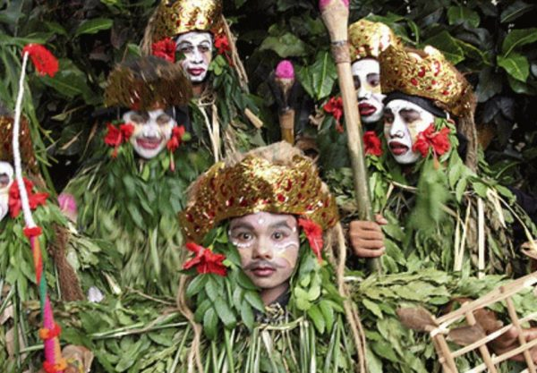
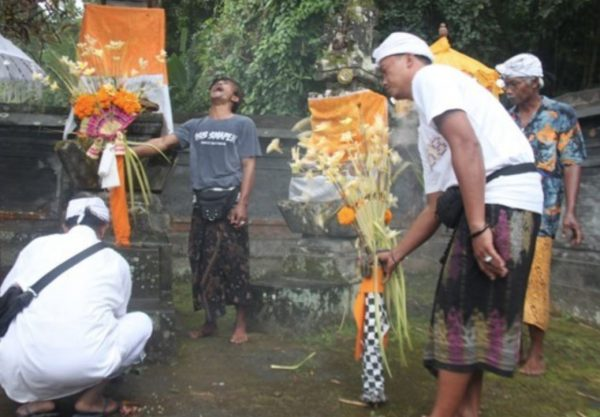

TABANAN
Tentang
Budaya
Desa Wisata
Search
Info Budaya
Berikut adalah beberapa tradisi-tradisi yang ada di Tabanan
Ngerebeg Keris Ki Baru Gajah, Puri Kediri, Tabanan
Baca Selengkapnya
Tradisi Mesuryak Di Desa Bongan Gede, Tabanan
Baca Selengkapnya

Tari Baris Memedi, Desa Jatiluwih Tabanan
Baca Selengkapnya

Tradisi Tarian Sang Hyang Sampat, Desa Pakraman Puluk Puluk, Penebel, Tabanan
Baca Selengkapnya
Tradisi Siat Sambuk Saat Pangrupukan di Pohgending, Tabanan
Baca Selengkapnya
Joged Dadua
Baca Selengkapnya